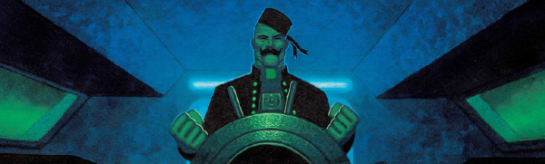

The classic descriptor is that Devlin (an occult investigator for the Vatican, and also a gay vampire exorcist) is a cross between Oscar Wilde and Arnold Schwarzenegger.
Art by Colin MacNeil
| Story Title | Parts | Pages | w indicates a wraparound coverCovers | Year(s) | Issues | Writer | Artist | Colourist | Letterer |
|---|---|---|---|---|---|---|---|---|---|
| Swimming in Blood | 9 | 78 | M2.05: Sean Phillips M2.09: Sean Phillips 2 | 1992 | M2.01-2.09 | John Smith | Sean Phillips | <-- | Steve Potter |
Linked to Judge DreddBrief Encounter | 1 | 9 | Sean Phillips 1 | 1993 | Reprints: B2KSE4M2.26 | John Smith | Sean Phillips | <-- | Steve Potter |
From Judge DreddFetish | 5 | + 5 credit pages85 | M3.26: Siku M3.29: Siku M3.30: Dermot Power 3 | 1997 | M3.26-M3.30 | John Smith | Siku | <-- | Ellie de Ville |
| Chasing Herod | 9 | + 0.5 credit pages54 | 1149: Greg Staples 1 | 1999 | 1149-1157 | John Smith | Steve Yeowell | D'Israeli | Annie Parkhouse |
| Reign of Frogs | 10 | 60 | 1158: Steve Cook 1 | 1999 | 1158-1167 | John Smith | Steve Yeowell | D'Israeli | Annie Parkhouse |
| Sirius Rising | 6 | 44 | 1170: Jason Brashill 1173: Colin Wilson 2 | 1999 | 1168-1173 | John Smith | Steve Yeowell | D'Israeli | Annie Parkhouse |
| A Mouthful of Dust | 2 | 20 | 0 | 2000 | M3.72-3.73 | John Smith | Michael Gaydos | [b&w] | David Bishop |
| Red Tide | 13 | 84 | M206: Colin MacNeil 1 | 2002-2003 | M201-213 | John Smith | Colin MacNeil | <-- | Annie Parkhouse |
From Judge DreddBite Fight | 2 | 24 | 0 | 2004 | M224-M225 | John Smith | John Burns | <-- | Tom Frame |
Linked to Strange & DarkeVile Bodies | 1 | 12 | 0 | 2004 | M227 | John Smith | Colin MacNeil | <-- | Ellie de Ville |
| All Hell | 6 | 50 | M232: Colin MacNeil 1 | 2005 | M231-235, M237 | John Smith | Colin MacNeil | <-- | Annie Parkhouse |
| Innocence & Experience | 4 | 24 | 0 | 2006-2007 | M253-256 | John Smith | Peter Doherty | <-- | Peter Doherty |
| Blood Debt | 6 | 49 | M388: Alex Ronald 1 | 2017-2018 | M388-M393 | Rory McConville | Mike Dowling | <-- | Simon Bowland |
| Kiss of Death | 3 | 24 | M397: Cliff Robinson (P) & Dylan Teague (C)1 | 2018 | M397-M399 | Rory McConville | Mike Dowling | <-- | Simon Bowland |
| Call Me by Thy Name | 1 | 12 | 0 | 2018 | M400 | Ales Kot | Mike Dowling | Quinton Winter | Simon Bowland |
| A Very Large Splash | 6 | 72 | M419: Cliff Robinson (P) & Dylan Teague (C) 1 | 2019-2020 | M415-M420 | Ales Kot | Mike Dowling | <-- | Annie Parkhouse |
| The Wolves of St. Vitus | 1 | 12 | 0 | 2020 | M422 | Ales Kot | Patrick Goddard | Pippa Bowland | Annie Parkhouse |
Full title: "When I Was A Young Demon (I Did A Bad, Bad Thing)".When I Was a Young Demon | 1 | 12 | 0 | 2020 | M423 | Ales Kot | Patrick Goddard | Pippa Bowland | Annie Parkhouse |
| A Question of Trust | 1 | 12 | 0 | 2021 | M430 | Ales Kot | Mike Dowling | <-- | Simon Bowland |
| The Lord of Lies | 1 | 12 | 0 | 2021 | M431 | Ales Kot | Mike Dowling | <-- | Simon Bowland |
| The Reckoning | 7 | 84 | M435: Alex Ronald1 | 2021 | M431 | Ales Kot | Mike Dowling | Quinton Winter | Simon Bowland |
From ArmitageNatural Fern Killer | 1 | 6 | 0 | 2021 | SFS26 | Liam Johnson | Robin Smith | Matt Soffe | Annie Parkhouse |
From Judge Dredd / Anderson Psi Division No supertitle. A Dredd/Anderson crossover.Apotheosis | 1 | 10 | 0 | 2021 | SFS26 | Michael Carroll Maura McHughvarious | James Newell | Jim Boswell | Simon Bowland |
| >> Text Stories << | |||||||||
| A Love Like Blood | 1 | 6 | 0 | 1993 | JDMS6 | John Smith | Sean Phillips | [b&w] | n/a |
| Body and Soul | 1 | 9 | 0 | 1993 | Reprints: M201JDYB'94 | John Smith | Sean Phillips | <-- | n/a |
| >> Posters / Teasers << | |||||||||
| Devlin Waugh | 1 | 1 | 0 | 1992 | M1.19 | editorial | Sean Phillips | <-- | n/a |
| Devlin Waugh | 1 | 1 | 0 | 1995 | M3.04 | n/a | Sean Phillips | <-- | n/a |
After George Michael: Faith.Faith [Devlin Waugh] | 1 | 1 | 0 | 1996 | JDMS9 | n/a | Sean Phillips | <-- | n/a |
| Devlin Waugh | 1 | 1 | 0 | 1997 | M3.29 | n/a | Sean Phillips | <-- | n/a |
| Devlin Waugh | 1 | 1 | 0 | 1999 | 1139-S | n/a | Greg Staples | <-- | n/a |
| Devlin Waugh | 1 | 1 | 0 | 1999 | 1165 | n/a | unknown | <-- | n/a |
Reprint from..?Devlin Waugh | 1 | 1 | 0 | 2000 | B2KSE4 | n/a | Reprint. Sean Phillips | <-- | n/a |
Art.[Devlin Waugh] | 1 | 1 | 0 | 2021 | M31 | n/a | Natti Chomchalao | <-- | n/a |
| >> Features << | |||||||||
Full title: "Character Profile: Devlin Waugh ‑ Swimming in Blood".Character Profile: Devlin Waugh | 1 | 3 | 0 | 1992 | M2.01 | editorial | Sean Phillips | <-- | n/a |
Full title: "The Making of Devlin Waugh: Swimming in Blood".The Making of Devlin Waugh | 2 | 4 | 0 | 1993 | M2.25-2.26 | unknown | Sean Phillips | <-- | n/a |
Subtitled: "The Curse of Devlin Waugh".Introducing Red Tide | 1 | 3 | 0 | 2002 | M201 | David Bishop | reprints / preprints | <-- | n/a |
| year | episodes | pages |
| 1990 | 0 | 0 |
| 1991 | 0 | 0 |
| 1992 | 9 | 78 |
| 1993 | 1 | 9 |
| 1994 | 0 | 0 |
| 1995 | 0 | 0 |
| 1996 | 0 | 0 |
| 1997 | 5 | 85 |
| 1998 | 0 | 0 |
| 1999 | 25 | 158 |
| 2000 | 2 | 20 |
| 2001 | 0 | 0 |
| 2002 | 1 | 7 |
| 2003 | 12 | 77 |
| 2004 | 3 | 36 |
| 2005 | 6 | 50 |
| 2006 | 1 | 6 |
| 2007 | 3 | 18 |
| 2008 | 0 | 0 |
| 2009 | 0 | 0 |
| 2010 | 0 | 0 |
| 2011 | 0 | 0 |
| 2012 | 0 | 0 |
| 2013 | 0 | 0 |
| 2014 | 0 | 0 |
| 2015 | 0 | 0 |
| 2016 | 0 | 0 |
| 2017 | 4 | 33 |
| 2018 | 6 | 52 |
| 2019 | 1 | 12 |
| 2020 | 7 | 84 |
| 2021 | 11 | 124 |
| 2022 | 0 | 0 |
Comic strip data (excludes other content):